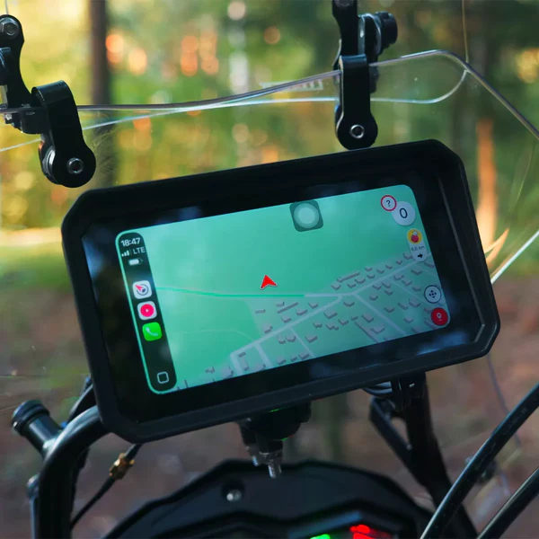
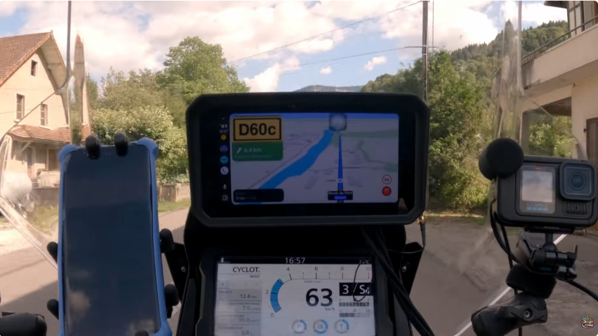
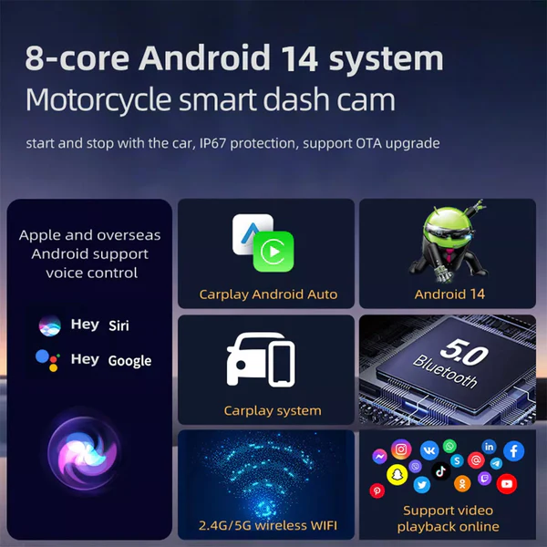
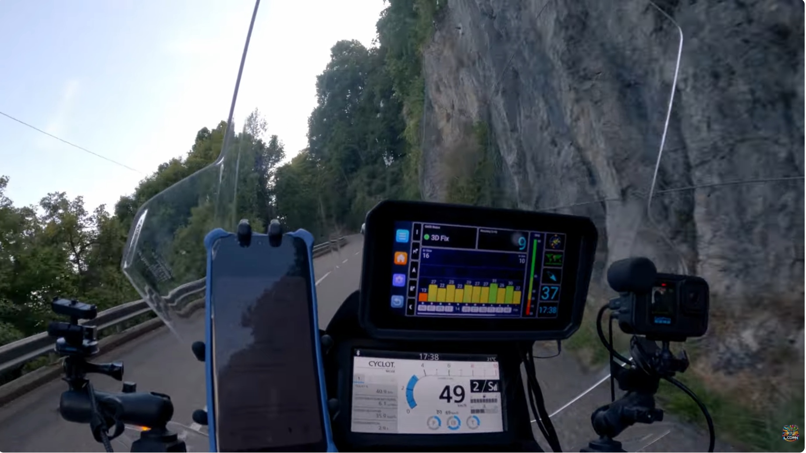
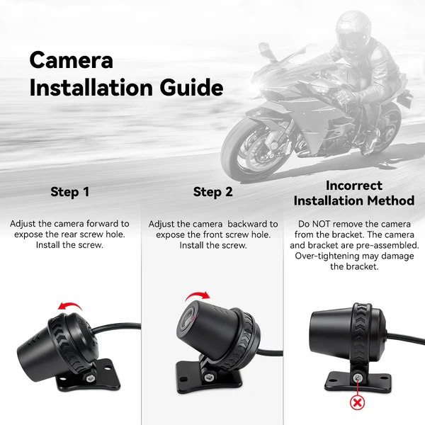
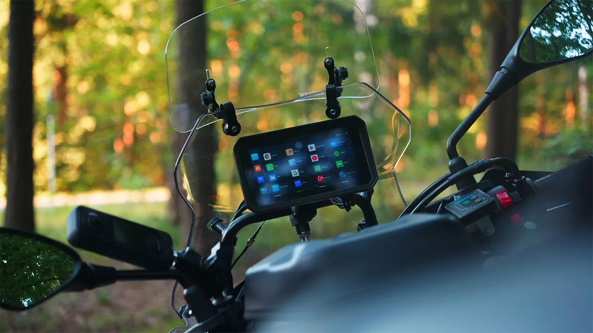
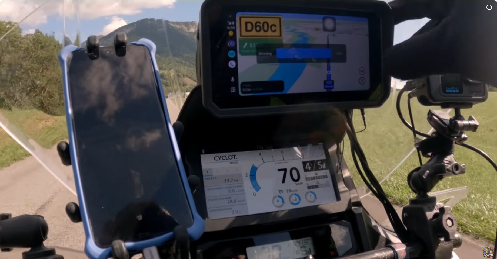
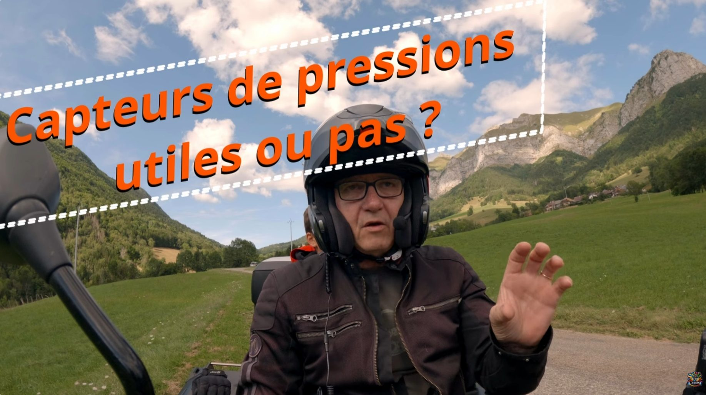

Petit test en situation réelle avec le GPS U6 que j'ai installé récemment sur ma NT. De retour du Cap Nord il y a quelques mois, j'avais pris du retard sur mes montages et j'en profite aujourd'hui pour te faire un vrai retour terrain sur cet appareil qui remplace mon téléphone Android pour la navigation.
Direction les magnifiques villages savoyards, notamment vers Doucy-en-Bauges - j'adore franchement ce coin. L'occasion parfaite pour tester ce GPS offline et répondre aux questions que vous m'avez posées.
🔍 Présentation du GPS U6

Un GPS offline pour motards

Le principe du U6, c'est de faire de la navigation sans avoir besoin de réseau. Il fonctionne uniquement avec les satellites GPS, ce qui est plutôt cool quand tu n'as plus de réseau en montagne. Attention, il faut quand même que l'application installée soit capable de marcher hors réseau - j'avais expliqué tout ça dans ma précédente vidéo.
Installation et positionnement

J'ai réussi à positionner l'écran juste au-dessus de celui de la NT. C'est super confortable, il est dans la ligne de mire sans gêner mon champ de vision. Ça c'est vraiment top. Pour l'instant c'est encore un peu le bazar dans les fils parce que je peaufine l'installation, mais il va venir se fixer sur la casquette avec une petite pince.
Avoir les deux écrans en pleine ligne de mire, c'est vraiment sécuritaire pour la navigation et bigrement efficace.
🏍️ Retour terrain

Navigation avec Magic Earth

J'ai testé Magic Earth comme application - c'est sympa. L'avantage c'est qu'en plus tu peux importer tes points GPX. Tu fais tout ton tracé sur PC avec Kurviger par exemple, puis tu l'importes. J'ai testé, ça marche, aucun problème. Tu importes ton fichier dans le téléphone, tu l'ouvres et il bascule automatiquement.
La navigation est vachement sympa, j'aime bien la lisibilité de la carte. On a de bonnes indications avec des flèches en superposition - je trouve que c'est plutôt bien fait.
Fonctionnalités pratiques

J'ai programmé la limitation de vitesse - dès que tu la dépasses, tu as un petit message classique. On peut aussi programmer les alertes radar. Tu peux même signaler un radar sur l'application s'il y en a un.
La réception satellite est plutôt bonne - une quinzaine captés, aucun problème pour naviguer. Quand tu redémarres après un arrêt, il faut bien 30 secondes pour que ça reparte, mais la navigation et la musique reprennent là où ça en était.
Luminosité et lisibilité

Dès qu'on est à l'ombre, l'écran est carrément génial. En plein soleil, même avec le soleil sur le côté de l'appareil, l'écran reste vachement lumineux - et je n'étais même pas au maximum de luminosité. C'est largement suffisant.
Branché sur un Thunder Box qui démarre et arrête l'appareil automatiquement avec la moto, il faut compter 30 secondes de redémarrage à chaque fois.
Capteurs de pression et température

Certains disent que les capteurs de pression, ça sert à rien. Effectivement, si tu roules en été au bord de la mer, peut-être. Mais moi je roule en hiver et en montagne, et je peux te dire que je suis bien content de savoir quand mes pneus sont à 0°C - tu es carrément plus vigilant que quand on t'annonce 5 ou 10°C.
En hiver en montagne, savoir si les pneus sont chauds ou pas, c'est important. Et tu t'aperçois que dès que tu t'arrêtes, la gomme refroidit très très vite.
Fonction caméra
D'autres ont dit que la partie caméra ne sert à rien. Question de point de vue. Si demain matin tu as un problème d'accrochage, tu seras peut-être bien content d'avoir les caméras pour te justifier si tu es dans ton bon droit. Tu peux verrouiller le fichier pour qu'il ne s'efface pas.
Commandes vocales
Avec le U6, je récupère les commandes vocales du Sena pour avancer et reculer sur les morceaux de musique, chose que je ne peux pas faire quand l'intercom est connecté à la NT - là il faut que j'utilise les boutons. Pour baisser ou augmenter le volume, c'est indifférent sur les deux.
🎯 À qui ça s'adresse
Ce GPS U6 s'adresse aux motards qui :
- Roulent souvent en montagne ou dans des zones sans réseau
- Veulent un système de navigation indépendant du téléphone
- Apprécient les fonctions multi-usage (caméra, capteurs pneus)
- Cherchent une solution complète pour leurs voyages
En hiver et en montagne, les capteurs de température et pression des pneus apportent une vraie valeur ajoutée pour la sécurité.
⚖️ Mon verdict
Dans l'ensemble, au niveau fonctionnalités et usage en roulage, les quelques limitations qu'il y a ne sont pas vraiment un frein. Le positionnement au-dessus de l'écran NT est parfait, la navigation est claire et efficace.
Le rapport prestation/prix me semble correct pour un appareil aussi complet. C'est bigrement bien étudié et ça fait le boulot pour préparer la moto au prochain voyage.
Bon, maintenant j'ai tellement de retard sur mes vidéos que ça va me calmer un peu pour les voyages, sinon je vais me retrouver avec des montages à faire pendant 1000 ans !